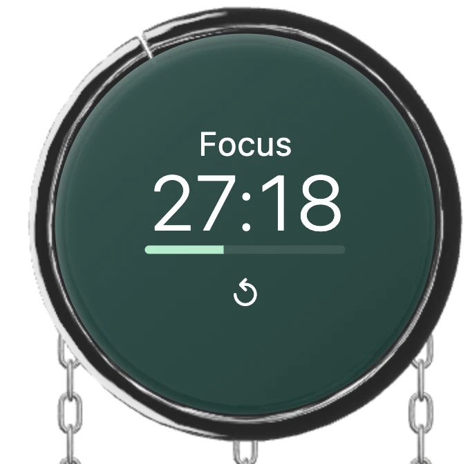
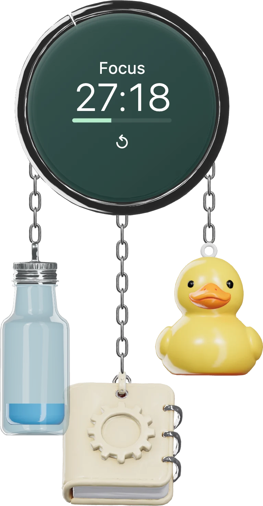
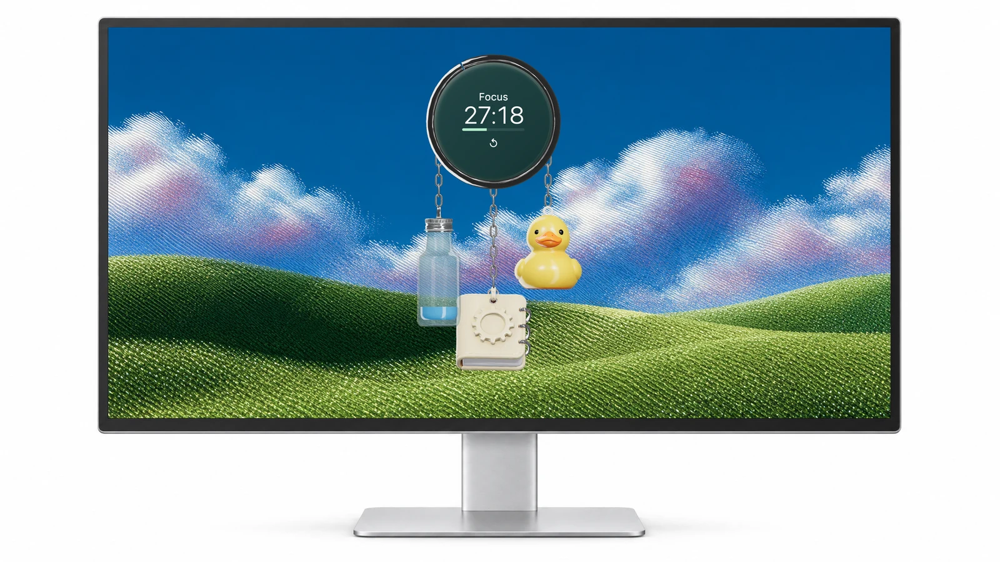
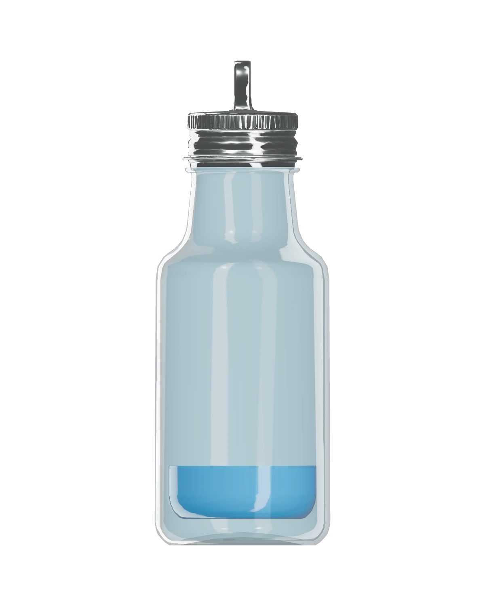
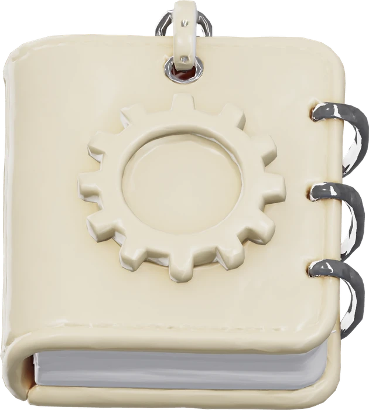
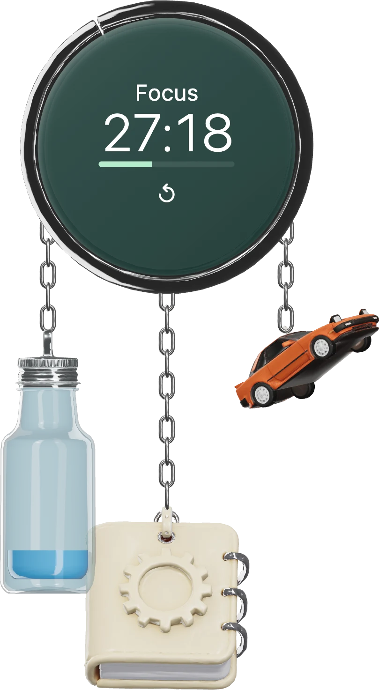
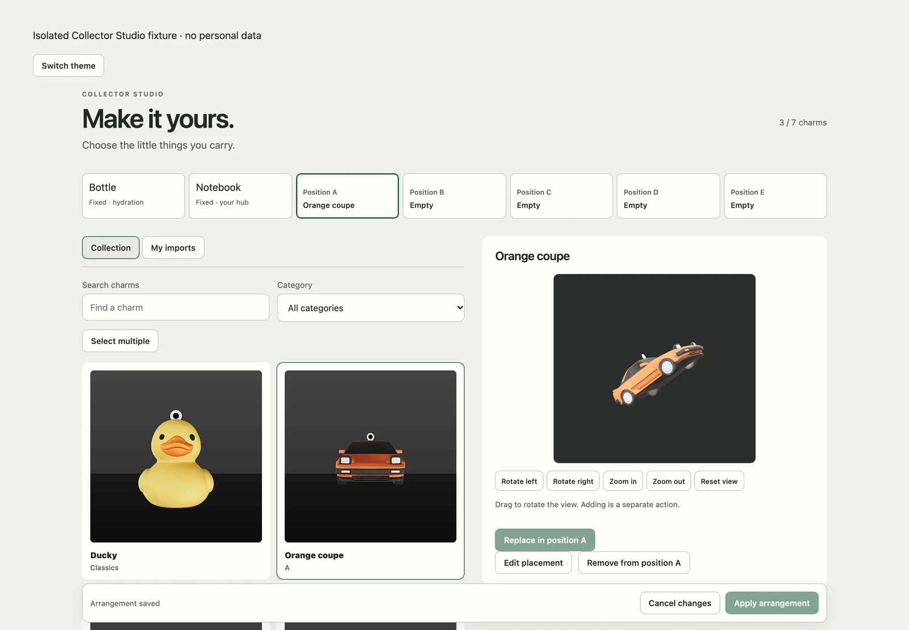

Focus
45 minutes of focus. 15 minutes of rest. Click the digits to pause or resume in the macOS app.
A desktop companion
A small collection of useful objects
that lives on your desktop.

Public development preview. Browser changes reset on reload; they never touch your desktop data.
A timer you can see. A drink you can log. A thought you can keep.


45 minutes of focus. 15 minutes of rest. Click the digits to pause or resume in the macOS app.

Click to log your selected amount. The fill shows daily progress. Undo stays available for 30 seconds.

Open Tasks, Notes and Settings from one little object. Notes and durable saves require the macOS app.

Click a card to inspect it. Choose a position, then apply your arrangement. Selecting a card never removes a charm.

The widget demo supports water logging, Undo, size changes and a gentle gust. The Studio demo supports model preview and temporary arrangement edits. Reloading resets the demo. The timer service, durable notes, native window controls and persistent imports require the macOS app.
These images remain available without WebGL. In the demo, use Retry graphics if offered. Check your browser’s hardware acceleration or try a current desktop browser. Native Controls remain separate from the 3D widget.
Chrome, glass and everyday rituals.
A 24-second product story.
Blue compositions, a desktop mockup, three hydration states and connected bottle, notebook, duck and car charms drifting over a landscape. Two quiet clicks; no speech or music.
The native build targets Apple Silicon Macs. It remains an unsigned development preview with native accessibility and performance checks outstanding.
Installation status and source setup ↗